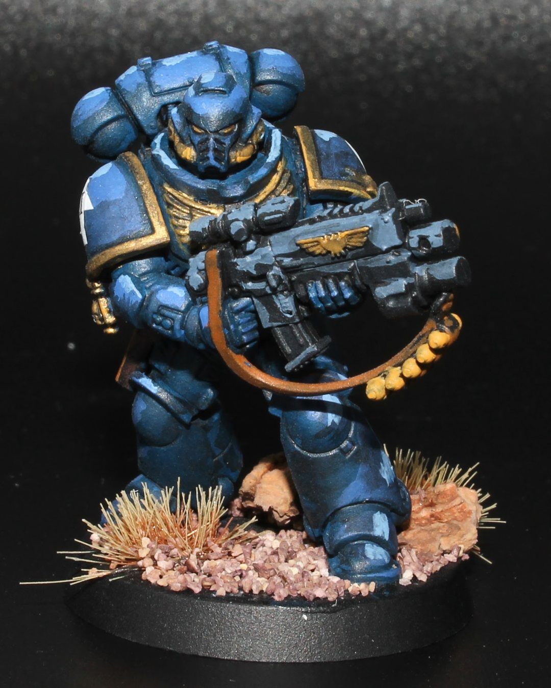
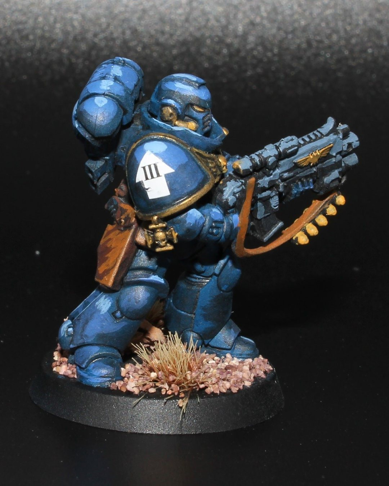
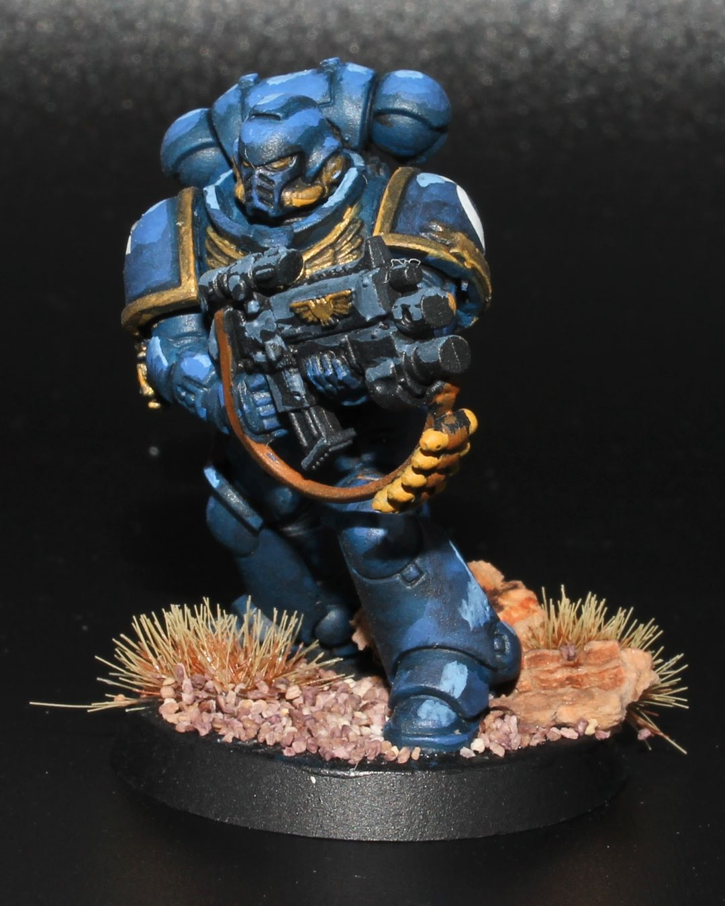
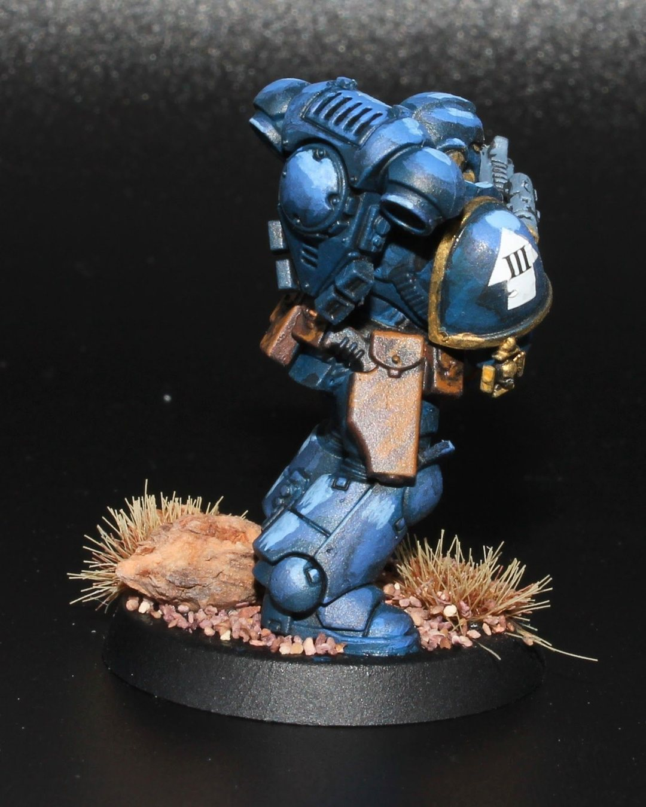
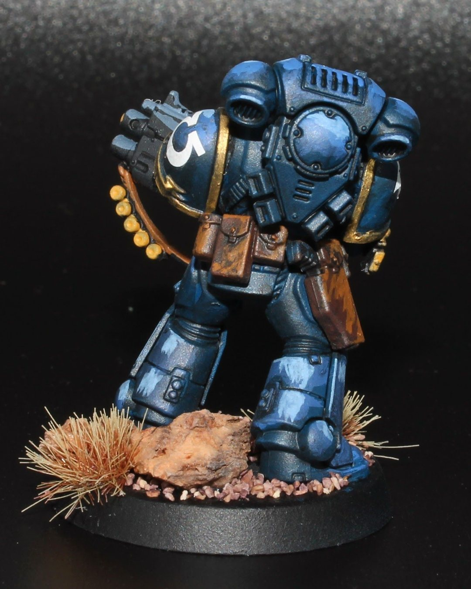
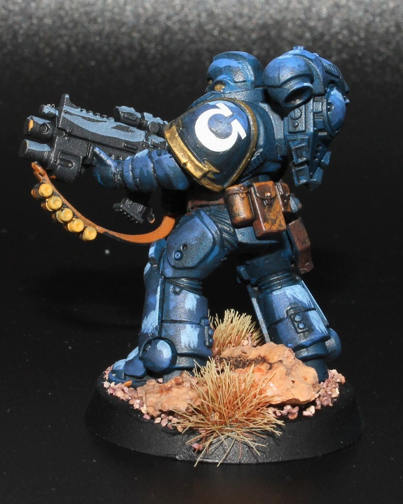
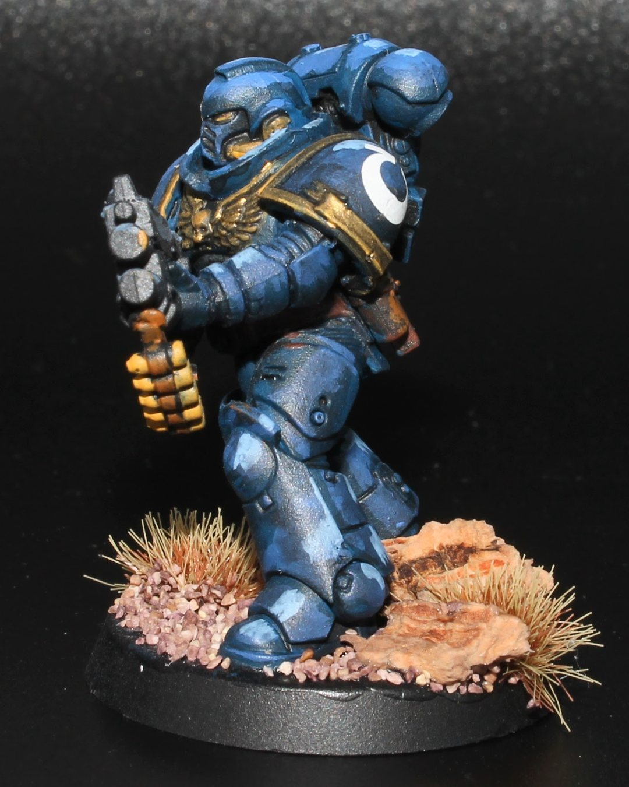
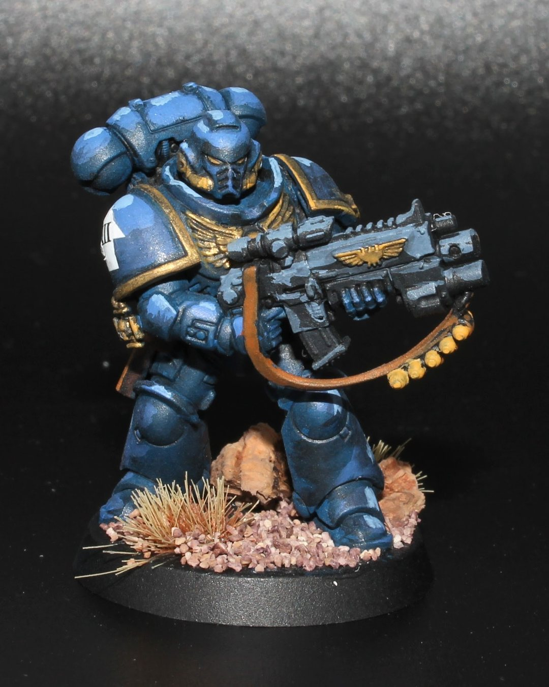

First 40K chapter
When starting to learn about the 40k universe, a few chapters jumped out at me. Here's one of the first two I have painted. I think my first try with basing from scratch and decal transfers came out well. Learning lots of new things with these guys!
Chapter: Ultramarines
The Ultramarines are the poster boys of Warhammer 40K—literally, they’re on the box, the lunchbox, and probably the Emperor’s Christmas card list. Led by Roboute Guilliman (pronounced “Robo-Girlyman” if you want to make a lore purist twitch), they follow the Codex Astartes like it’s the sacred IKEA manual of galactic warfare. Known for being absurdly by-the-book, they probably have a flowchart for how to sneeze in power armor. With blue armor, noble ideals, and the organizational skills of a Type-A accountant, they’re the galaxy’s best hope for order—assuming they can get through a 12-step meeting protocol before actually shooting anything.
#MiniaturePainting #VallejoColors #PaintingMinis #BoardGames #Hobbies #Warhammer #Warhammer40k #SpaceMarine #Salamander
@coolminiornot @best4minis @best.of.miniatures @vallejocolors @warhammerofficial